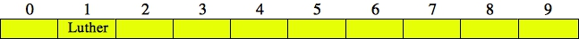
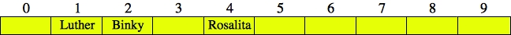
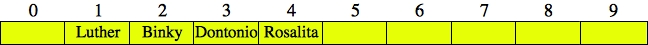
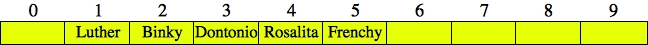
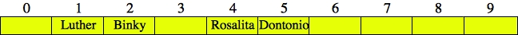
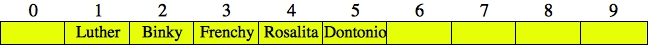
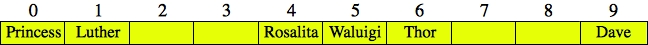
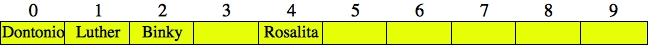
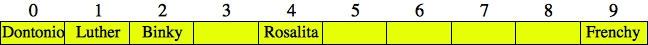

There are three components that are involved with performing storage and retrieval with Hash Tables:
An example helps to illustrate the basic concept. Let's suppose that our hash table is of size 10, and that we are hashing strings. We'll talk about hash functions later, but let's suppose that we have four strings that we want to store in our hash table: "Luther," "Rosalita", "Binky" and "Dontonio." Let's also suppose that we have a hash function that converts these strings into the following values:
|  |
Similarly, "Rosalita" goes into index 4, and "Binky" into index 2. If we insert them into the hash table, the table looks as follows:
|  |
To find a string in the hash table, we calculate its hash value modulo ten, and we look at that index in the hash table. For example, if we want to see if "Luther" is in the hash table, we look in index 1.
Now, suppose we want to look for "Dontonio" in the hash table. Since its hash value is 2797174031, we look in index 1. It's not there. Now suppose we wanted to insert "Dontonio." Well, that's a problem, because "Luther" is already at index one. That is a collision.
I'm not going to fix this problem until later in these lecture notes when we discuss collision resolution strategies. However, it demonstrates why collisions are problems.
(Number of data elements in the hash table) / (Size of the hash table)
That's a pretty intuitively named property. In the hash table pictured above, the load factor is 0.3, because there are three strings in the hash table, and the table size is ten. We can typically quantify how well a hash table is functioning by its load factor.
The selection of a hash function is very important. You want your hash function to have two important properties:
We start with the most obvious hash function for strings -- add up the ASCII values of the characters. I'm going to call this hash function "BAD". I have this programmed in badhash.cpp:
#include <iostream>
using namespace std;
unsigned int bad_hash(string &s)
{
int i;
unsigned int h;
h = 0;
for (i = 0; i < s.size(); i++) {
h += s[i];
}
return h;
}
main()
{
string s;
unsigned int h;
while (getline(cin, s)) {
h = bad_hash(s);
cout << h << endl;
}
}
|
Why the unsigned int? The reason is that I want to allow my hash values to go into any 32-bit integer, and I don't want negative numbers. To do that, I specify that the integer be unsigned. Knowing that the ASCII value of 'A' is 65 and that the ASCII value of 'a' is 97, we can verify that the hash function works as advertised:
UNIX> badhash A 65 a 97 Aa 162 <CNTL-D> UNIX>The program in djbhash.cpp programs the "DJB" hash function from the York University page:
unsigned int djb_hash(string &s)
{
int i;
unsigned int h;
h = 5381;
for (i = 0; i < s.size(); i++) {
h = (h << 5) + h + s[i];
}
return h;
}
|
Although the web page says that this is equivalent to:
| hi = 33hi-1 ^ s[i] |
where the carat operator is bitwise exclusive-or, that is not what is implemented. Instead, we take hi-1 and "bit-shift" it, five places to the left. That is equivalent to multiplying by 32, which is 25. However if any of the leftmost 5 bits of the number are set, they are "shifted away" -- they go away. We then add hi-1 -- that is how the author performs multiplication by 33. Finally, we add s[i] rather than performing the bitwise exclusive-or. I don't know why -- I'm just copying code from the web page.
We can double-check ourselves though:
UNIX> djbhash a 177670 5381 * 33 + 97 = 177670 aA 5863175 177670 * 33 + 65 = 5863175 aAA 193484840 5863175 * 33 + 65 = 193484840 aAAA 2090032489 <CNTL-D> UNIX>
That last number takes a little work to verify. First, let's look at 193484840 in hexadecimal (you can do this in C++, but the scripting language awk supports printf, so it's easier):
UNIX> echo 193484840 | awk '{ printf "0x%08x\n", $1 }'
0x0b885828
UNIX>
As mentioned in previous lectures, hexadecimal allows you to look at bytes -- every two
hex digits is a byte: 0b, 88, 58, 28. Breaking this down further, each hexadecimal digit
represents four bits, so the number is:
0000 1011 1000 1000 0101 1000 0010 1000 |
Performing the left bit-shift by 5 turns this number into:
0111 0001 0000 1011 0000 0101 0000 0000 |
I've tried to use the blue color to help you -- those are the original bits that remain after the bit-shift. This is 0x710b0500 in hex, which is 1896547584 in decimal (see your lab for how to do that conversion). And finally, 1896547584 + 193484840 + 65 = 2090032489. We've verified that the function works!!
One last hash function comes from [Pearson10]. We'll call it ACM. It uses a permutation table to calculate the hashes: acmhash.cpp:
static unsigned char perm_table[256] = {
1, 87, 49, 12, 176, 178, 102, 166, 121, 193, 6, 84, 249, 230, 44, 163,
14, 197, 213, 181, 161, 85, 218, 80, 64, 239, 24, 226, 236, 142, 38, 200,
110, 177, 104, 103, 141, 253, 255, 50, 77, 101, 81, 18, 45, 96, 31, 222,
25, 107, 190, 70, 86, 237, 240, 34, 72, 242, 20, 214, 244, 227, 149, 235,
97, 234, 57, 22, 60, 250, 82, 175, 208, 5, 127, 199, 111, 62, 135, 248,
174, 169, 211, 58, 66, 154, 106, 195, 245, 171, 17, 187, 182, 179, 0, 243,
132, 56, 148, 75, 128, 133, 158, 100, 130, 126, 91, 13, 153, 246, 216, 219,
119, 68, 223, 78, 83, 88, 201, 99, 122, 11, 92, 32, 136, 114, 52, 10,
138, 30, 48, 183, 156, 35, 61, 26, 143, 74, 251, 94, 129, 162, 63, 152,
170, 7, 115, 167, 241, 206, 3, 150, 55, 59, 151, 220, 90, 53, 23, 131,
125, 173, 15, 238, 79, 95, 89, 16, 105, 137, 225, 224, 217, 160, 37, 123,
118, 73, 2, 157, 46, 116, 9, 145, 134, 228, 207, 212, 202, 215, 69, 229,
27, 188, 67, 124, 168, 252, 42, 4, 29, 108, 21, 247, 19, 205, 39, 203,
233, 40, 186, 147, 198, 192, 155, 33, 164, 191, 98, 204, 165, 180, 117, 76,
140, 36, 210, 172, 41, 54, 159, 8, 185, 232, 113, 196, 231, 47, 146, 120,
51, 65, 28, 144, 254, 221, 93, 189, 194, 139, 112, 43, 71, 109, 184, 209};
unsigned int acm_hash(string &s)
{
int i, j;
unsigned int h;
unsigned char byte_hash[4];
for (j = 0; j < 4; j++) byte_hash[j] = 0;
j = 0;
for (i = 0; i < s.size(); i++) {
byte_hash[j] = perm_table[byte_hash[j]] ^ s[i];
j++;
if (j == 4) j = 0;
}
h = 0;
for (j = 0; j < 4; j++) h = (h << 8) | byte_hash[j];
return h;
}
|
Now, I know this is a little confusing, but such is life. The permutation table contains a permutation of the numbers between 0 and 255. We then calculate the hashes as follows:
Otherwise: hi =
perm_table[hi-4] ^ s[i]
Again, the carat is the bitwise exclusive-or operator. After calculating all the hi, we only consider the last four. These are held in the array byte_hash. Specifically, byte_hash[0] holds whichever of the last four hi has (i%4) = 0. byte_hash[0] holds whichever of the last four hi has (i%4) = 1, and so on. We then construct h so that byte_hash[0] is the first byte, byte_hash[1] is the second byte, and so on.
Let's walk through some examples:
UNIX> acmhash a 1610612736 aaaa 1616928864 aaaaa 3848298592 <CNTL-D> UNIX>In the first example, we have:
| h0 | = | perm_table[h-4] ^ 97 |
| = | perm_table[0] ^ 97 | |
| = | 1 ^ 97 | |
| = | 96 |
96 is 0x60 in hexadecimal. Therefore, h is equal to 0x60000000. Check it out:
UNIX> echo 1610612736 | awk '{ printf "0x%08x\n", $1 }'
0x60000000
UNIX>
When we try "aaaa",
h0 =
h1 =
h2 =
h3 = 96. Therefore h is equal to 0x60606060:
UNIX> echo 1616928864 | awk '{ printf "0x%08x\n", $1 }'
0x60606060
UNIX>
And finally, when we do "aaaaa", we have
| h4 | = | perm_table[h0] ^ 97 |
| = | perm_table[96] ^ 97 | |
| = | 132 ^ 97 | |
| = | 0x84 ^ 0x61 | |
| = | (1000 0100) ^ (0110 0001) | |
| = | (1110 0101) | |
| = | 0xe5 |
Thus, h is equal to 0xe5606060:
UNIX> echo 3848298592 | awk '{ printf "0x%08x\n", $1 }'
0xe5606060
UNIX>
Yay!!
I know that was detailed and probably very difficult. I'll make sure we go over it in class.
UNIX> wc names_100000.txt 100000 216288 1599207 names_100000.txt UNIX> head names_100000.txt Charlie Muffin Alexandra Map Sophia Compensatory Jack Havoc PhD Joseph Tawny Kaylee Torture Addison Oppressor Sophie Tercel Caleb Troglodyte Victoria Garish UNIX>Let's suppose we wanted to create a hash table with these names, and that the hash table's load factor is 0.5. Thus, we'll make the table size 200,000. We can see the hash values generated by piping badhash, djbhash and acmhash to awk, which will print the hash value mod 200,000:
UNIX> head names_100000.txt | badhash | awk '{ print $1%200000 }'
1341
1230
1928
1190
1180
1392
1711
1255
1572
1471
UNIX> head names_100000.txt | djbhash | awk '{ print $1%200000 }'
121954
19475
49837
65483
86881
97205
141524
12204
127017
54052
UNIX> head names_100000.txt | acmhash | awk '{ print $1%200000 }'
10430
173738
65289
133744
46463
21690
76893
59060
133035
185216
UNIX>
You should see a red flag with BAD. All of those numbers are between 1000 and 2000.
That's because the ASCII values of characters are between 67 and 127 (roughly), and if a name
has 15 characters, that will give you hash values between 67*15 and 127*15. In other words,
roughly between 1000 and 2000. That's not very good. The others look more random.
To evaluate even more, let's calculate all 100,000 hash values, pipe it through awk to print the numbers mod 200,000 and then pipe that through sort -un. This sorts the values numerically, stripping out duplicates. If we pipe that to wc, we can see how many distinct values are produced. The higher that number, the fewer collisions there are:
UNIX> cat names_100000.txt | badhash | awk '{ print $1%200000 }' | sort -un | wc
2305 2305 11106
UNIX> cat names_100000.txt | djbhash | awk '{ print $1%200000 }' | sort -un | wc
78605 78605 506578
UNIX> cat names_100000.txt | acmhash | awk '{ print $1%200000 }' | sort -un | wc
78610 78610 506934
UNIX>
You can see how BAD produces just 2305 distinct hash values, while the others produce roughly
78600. They do a much better job of reducing collisions: only 25% of the hash values collide.
The nice thing about separate chaining is that it does not place limitations on the load factor. It should be pretty clear that if the load factor of a hash table with separate chaining is x, then the average size of each vector is x. That means that to find a piece of data in a hash table, the performance is going to linearly dependent on x. We'll demonstrate that below.
The code in cc_hacker.cpp programs up a simple hash table with separate chaining. It stores names and credit card numbers in the hash table. As command line arguments, it accepts a hash table size and a file of credit card numbers/names as in cc_names_10.txt:
5034036940778753 Samantha Bustle 9614647402933149 Sydney Macaque 9520044178288547 Eli Boone 4591437720049815 Lillian Handiwork 9464976002919633 Carson Shipmen 1263239861455040 Joshua Lucid IV 1750256670725811 Aaron Flaunt 8988852954721062 Brooklyn Samantha Hoofmark 8293347969318340 Avery Parsifal 1579529982933479 Alyssa Kissing |
For each line, it creates a Person instance, calculates a hash of the name using DJB and then inserts the name into the hash table. Since we're using separate chaining, the hash table is a table of Person vectors. To insert a Person, we calculate the hash of the name, take it modulo the table size and call push_back() on the vector that is there.
After reading the table, we read names on standard input, and look them up in the table.
Here's an example:
UNIX> djbhash Sydney Macaque 1929449534 Eli Boone 3852330034 Samantha Bustle 2419233313 Jim Plank 2620064763 <CNTL-D> UNIX> cc_hacker 10 cc_names_10.txt Enter a name> Sydney Macaque Found it: Table entry 4: Sydney Macaque 9614647402933149 Enter a name> Eli Boone Found it: Table entry 4: Eli Boone 9520044178288547 Enter a name> Samantha Bustle Found it: Table entry 3: Samantha Bustle 5034036940778753 Enter a name> Jim Plank Not found. Table entry 3 Enter a name> <CNTL-C> UNIX>Both "Eli Boone" and "Sydney Macaque" have hash values that equal 4 modulo 10. Therefore, they are in the same "chain". "Samantha Bustle" and "Jim Plank" both have hash values of 3 -- "Samantha Bustle" is in the hash table, and "Jim Plank" is not.
As mentioned above, the average number of entries in each "chain" is equal to the load factor. Therefore, the performance of lookup will be proportional to the load factor.
To demonstrate this, the file cc_names_100K.txt has 100,000 random names/credit cards, and cc_just_names_100K.txt has just the names, in a different order.
As we increase the table size, the program runs faster: (Redirecting standard output to /dev/null simply says to not print standard output).
UNIX> time cc_hacker 10 cc_names_100K.txt < cc_just_names_100K.txt > /dev/null 18.283u 0.234s 0:18.51 100.0% 0+0k 0+0io 0pf+0w UNIX> time cc_hacker 100 cc_names_100K.txt < cc_just_names_100K.txt > /dev/null 2.294u 0.098s 0:02.39 99.5% 0+0k 0+0io 0pf+0w UNIX> time cc_hacker 1000 cc_names_100K.txt < cc_just_names_100K.txt > /dev/null 0.545u 0.072s 0:00.61 100.0% 0+0k 0+1io 0pf+0w UNIX> time cc_hacker 10000 cc_names_100K.txt < cc_just_names_100K.txt > /dev/null 0.385u 0.070s 0:00.45 100.0% 0+0k 0+0io 0pf+0w UNIX>If we instead try to look up 100,000 names that are not in the table, will it run faster or slower? You tell me.
You may think that open addressing is stupid -- computers have tons of memory these days, so separate chaining should work easily. However, suppose you have to work in constrained environments (e.g. embedded processors) with much tighter memory requirements. Then, being able to preallocate your hash table might be very important.
The remainder of these lecture notes are without computer code, because I want to give you the joy of programming these collision resolution strategies yourself!
With open addressing, you will generate a sequence of hash values for a given key until you find a value that corresponds to a free slot in the hash table. To be precise, you will generate a sequence of hash values, h0, h1, h2, ..., and you look at each in the hash table until you find the value (when you are doing look up), or until you find an empty hash table entry (when you are inserting, or when you are looking up a value that is not there). The various hi are defined as:
H() is the hash function, and F() is a function that defines how to resolve collisions. It is usually convenient to make sure that F(0, key) equals zero, and it is necessary for F(i, key) not to equal zero when i doesn't equal zero.
UNIX> djbhash Luther 3249384281 Rosalita 2627953124 Binky 216319842 Dontonio 2797174031 Frenchy 561643892 <CNTL-D> UNIX>These are the same hash values as in the beginning of these notes, so when we insert "Luther", "Rosalita" and "Binky", they will hash to indices 1, 4 and 2 respectively, so there are no collisions. Here's the hash table:
Dontonio hashes to 1, so we have a collision. Formally:
| h0 | = | (2797174031 + 0) % 10 = 1 |
| h1 | = | (2797174031 + 1) % 10 = 2 |
| h2 | = | (2797174031 + 2) % 10 = 3 |
Therefore, we insert "Dontonio" into index 3:
|  |
Similarly, "Frenchy" hashes to 2, so it collides and ends up in index 5:
|  |
If we try to find the key "Baby-Daisy", we first find its hash value using djbhash: 2768631242. We'll have to check indices 2, 3, 4 and 5 before we find that index 6 is empty and we can conclude that "Baby-Daisy" is not in the table.
We'll use the same example -- "Luther", "Rosalita" and "Binky" are in the hash table and we want to insert "Dontonio".
Since there is a collision, we test values of hi until we find one that's not in the table:
| h0 | = | (2797174031 + 02) % 10 = 1 |
| h1 | = | (2797174031 + 12) % 10 = 2 |
| h2 | = | (2797174031 + 22) % 10 = 5 |
Thus, "Dontonio" goes into index 5:
|  |
Now when we insert "Frenchy", it collides at h0 = 2, but not at h1 = 3:
|  |
If we try to find "Baby-Daisy", we'll check indices 2, 3 and 6 to determine that she is not in the table.
Quadratic Probing can have an issue that all hash table entries are not checked by the various hi. For example, suppose we've inserted "Luther" (3249384281), "Rosalita" (2627953124), "Princess" (2493584940), "Thor" (2089609346), Waluigi (385020695) and "Dave" (2089026949) into the table:
|  |
Suppose we want to now insert "Peach", which has has a hash value of 232764550. We go through the following sequences of hi:
| h0 | = | (232764550 + 02) % 10 = 0 |
| h1 | = | (232764550 + 12) % 10 = 1 |
| h2 | = | (232764550 + 22) % 10 = 4 |
| h3 | = | (232764550 + 32) % 10 = 9 |
| h4 | = | (232764550 + 42) % 10 = 6 |
| h5 | = | (232764550 + 52) % 10 = 5 |
| h6 | = | (232764550 + 62) % 10 = 6 |
| h7 | = | (232764550 + 72) % 10 = 9 |
| h8 | = | (232764550 + 82) % 10 = 4 |
| h9 | = | (232764550 + 92) % 10 = 1 |
| h10 | = | (232764550 + 102) % 10 = 0 |
| h11 | = | (232764550 + 112) % 10 = 1 |
| ... | ||
That's a problem, as we can't put "Peach" into the table. You need to do a little math to help ensure that hi covers all possible values. Having the table size be prime helps, as would different settings of c1 and c2 in the more general version of quadratic probing.
Let's try an example -- let's have H2 be equal to acmhash modulo the table size, and if that value is equal to 0, then set it to one. We'll start with "Luther", "Rosalita" and "Binky" in the table:
Again, we want to insert "Dontonio", whose hash value is 2797174031. Since that collides, we need to calculate H2("Dontonio"), which equals 2511778359%10 = 9. Thus h1 = (2797174031+9)%10 = 0, and we can put "Dontonio" into index zero:
|  |
Next comes "Frenchy", whose hash value is 561643892. That collides, so we calculate H2("Frenchy"), which equals 3425106287%10 = 7. Thus h1 = (561643892+7)%10 = 9, and we can put "Frenchy" into index nine:
|  |
Suppose we want to find "Baby-Daisy". Her hash value is 2768631242, which collides with "Binky". H2("Baby-Daisy") is equal to 2774673939%10=9. Therefore, we'll check hash locations 1, 0, 9 and 8 before seeing that she is not in the hash table.
Finally, as with quadratic probing, you need to be careful with double hashing. Suppose I try to insert "Ryan" into the hash table. The DJB hash value is 2089555519 and the ACM hash value is 1400397935. Do you see why that's problematic:
| h0 | = | (2089555519 + 0*5) % 10 = 9 |
| h1 | = | (2089555519 + 1*5) % 10 = 4 |
| h2 | = | (2089555519 + 2*5) % 10 = 9 |
| h3 | = | (2089555519 + 3*5) % 10 = 4 |
| ... | ||
You can fix the problem in a few ways. The easiest, as with quadratic probing, is to make sure that the table size is a prime number. There are other fixes, but I won't go into them (maybe in class).